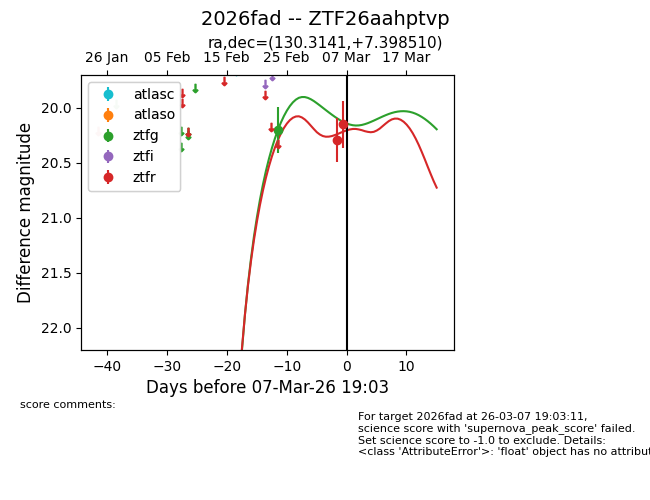
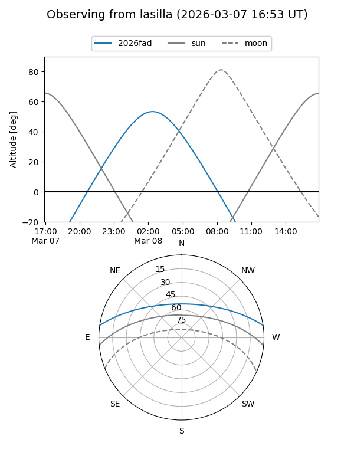
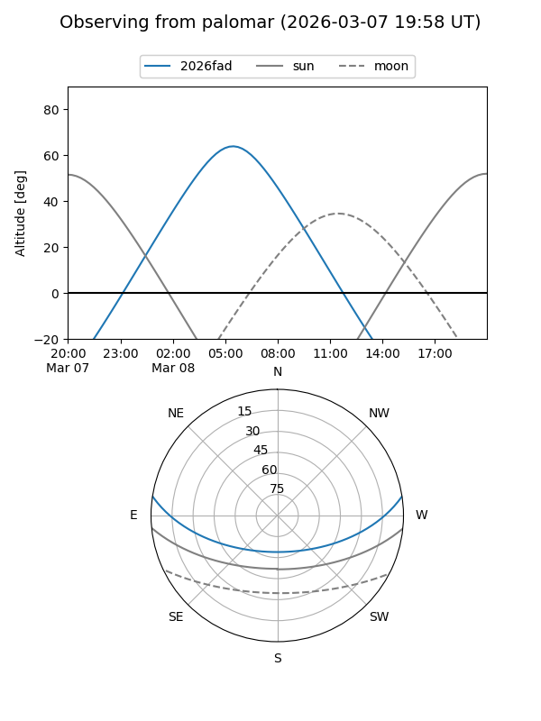
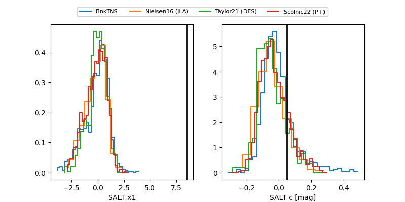

2026fad
Target 2026fad at 2026-03-07 19:05
Aliases and brokers:
FINK: link
Lasair: link
ALeRCE: link
TNS: link
YSE: link
alt names
ZTF26aahptvp (ztf,fink_ztf)
2026fad (tns,yse)
Coordinates:
equatorial (ra, dec) = 130.3141,+7.39851
equatorial (HMS+DMS) = 08:41:15.39,+07:23:54.64
galactic (l, b) = (219.0211,+27.75077)
Flags:
Photometry:
last ztfg=20.20, ztfr=20.15
1 ztfg, 2 ztfr detections
Lightcurve

Visibility


Additional plots
